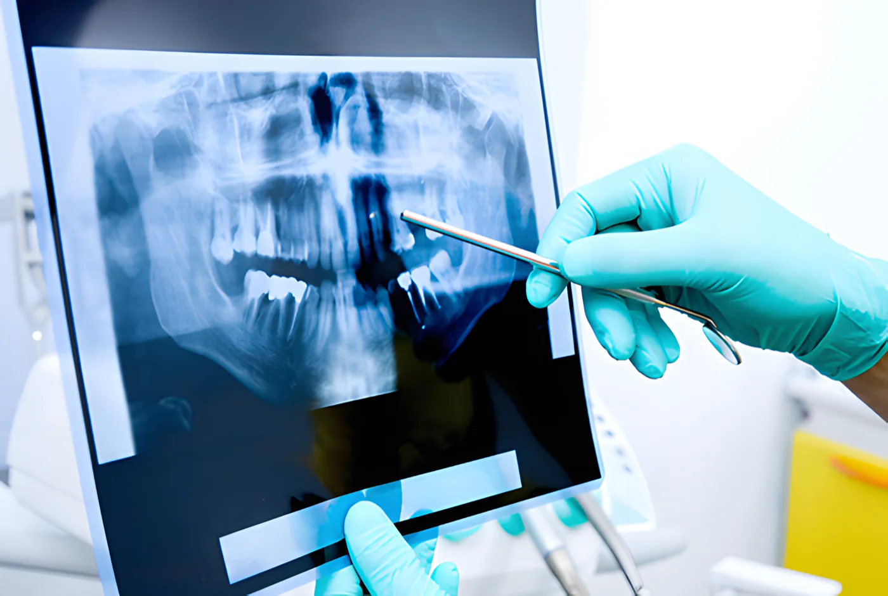

Check-ups & 3D X-rays
The dentist looks at your teeth, gums and mouth, tells you what needs doing and what can wait, and shows you how to look after your teeth until the next visit.
We take X-rays in the clinic, including 3D X-rays, which show the bone and roots in far more detail than a flat film. They're what we plan implants and difficult root canals from.
